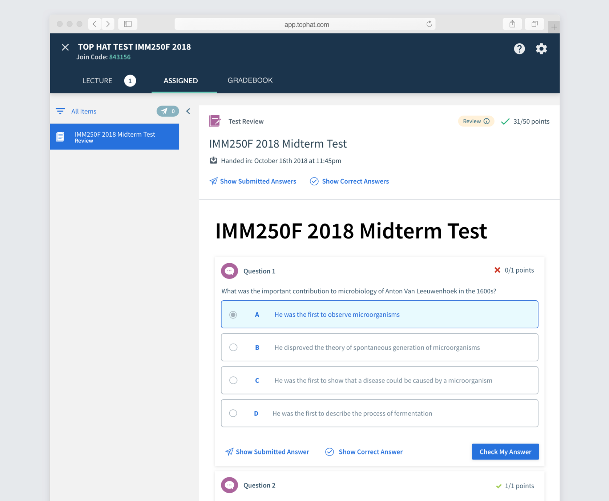
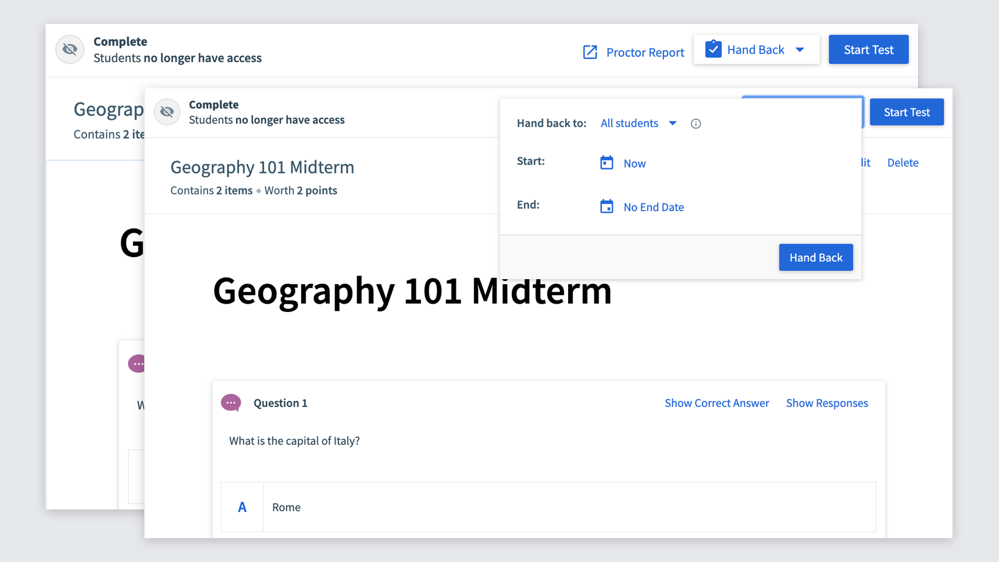
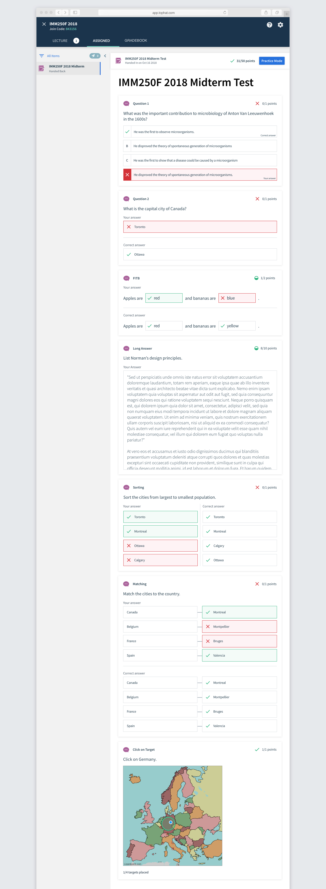
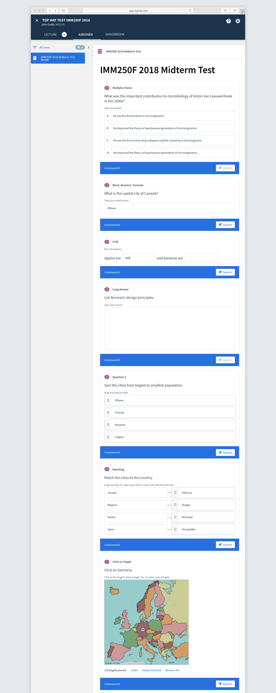

Map the digital experience to something students already understand
Top Hat Test could administer secure exams, but professors had no way to hand completed tests back for students to review. The experience needed to match the expectations people already had from paper tests.
Hand the test back once grades are ready.
Show total grade, correct and incorrect responses, and the correct answer.
Let students use the reviewed test to prepare for future assessments.
Some professors reuse tests and only allow individual students to review them in person, so handback also needed an individual-release model.
Version 1 — reuse the existing Review pattern
My first approach applied Top Hat’s existing Review mode to Test. It was familiar and relatively straightforward to build, but students had to toggle between their submitted answer and the correct answer.

Professors disliked not being able to see both answers together and repeatedly used the language “Hand Back” instead of “Review.”
Version 2 — optimize for review, separate practice
The second version put submitted and correct answers together in the normal handback flow and moved practice into a separate mode. I also used the opportunity to modernize the question presentation.
Testing with students
We brought 10 students into the office who had recently taken a Top Hat Test. I tested both versions in alternating order and asked which they preferred.
8 of 10 students preferred Version 2 because it was clearer for reviewing their results. They liked Practice Mode too, but preferred it as a separate activity.
The final experience
For professors, Hand Back appears once the test ends and student responses exist. Tests can be released to everyone or to individual students, supporting the office-hours scenario.

On the student side, I designed the correct/submitted answer treatment across all seven question types so correctness could be understood at a glance while still being explicitly labelled.

I also redesigned the question inputs with the intention of eventually updating the question system more broadly across Top Hat.
